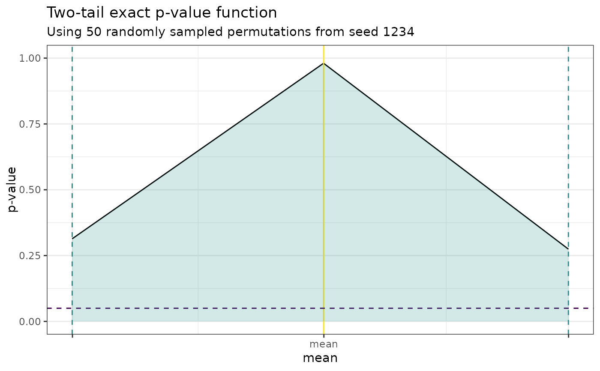

This function plots the plausibility function for up to two parameters of interest.
Arguments
- pf
A
PlausibilityFunctionobject.- alpha
A numeric value specifying a significance level to contrast the plausibility function against. Defaults to
0.05.- ngrid
An integer specifying the grid size on which the plausibility function will be evaluated. Specifically if
Kis the number of parameters under investigation, the grid will be of size(ngrid + 1)^K. Defaults to10L.- subtitle
A string for specifying a subtitle to the plot. Defaults to
""leading to no subtitle.
Value
A ggplot object.
Examples
x <- rnorm(10)
y <- rnorm(10, mean = 2)
null_spec <- function(y, parameters) {purrr::map(y, ~ .x - parameters[1])}
stat_functions <- list(stat_t)
stat_assignments <- list(mean = 1)
pf <- PlausibilityFunction$new(
null_spec = null_spec,
stat_functions = stat_functions,
stat_assignments = stat_assignments,
x, y
)
#> ! Setting the seed for sampling permutations is mandatory for obtaining a continuous p-value function. Using `seed = 1234`.
pf$set_nperms(50)
pf$set_point_estimate(mean(y) - mean(x))
#> ! The input point estimate vector is not named. The names provided via the `stat_assignments` list will be used instead.
pf$set_parameter_bounds(
point_estimate = pf$point_estimate,
conf_level = 0.8
)
#> ℹ Setting new maximum confidence level in field `$max_conf_level`.
#> ℹ Computing a confidence interval with confidence level 0.8 for parameter mean...
pf$set_grid(
parameters = pf$parameters,
npoints = 2L
)
#> ℹ Setting new grid size in field `$npoints`.
pf$evaluate_grid(grid = pf$grid)
#> ℹ Evaluating grid.
plot_pf(pf)
